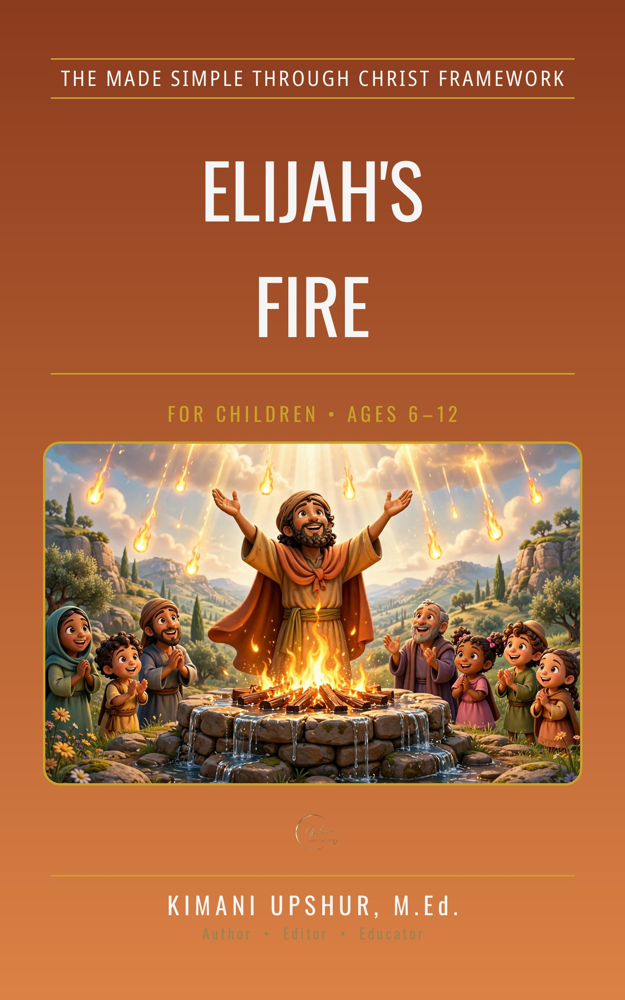

Home / Kids & Teens / Children

Elijah's Fire
The Showdown on Mount Carmel
by Kimani Upshur, M.Ed.
One prophet. Four hundred and fifty prophets of Baal. One mountain — and a God who answers by fire. Elijah's Fire retells 1 Kings 18 for children, subtitled 'The Showdown on Mount Carmel.' After three years of drought and famine in Israel, Elijah confronts King Ahab — who calls him 'you troubler of Israel' — while Obadiah, the official who hid one hundred prophets in caves, carries Elijah's message. On Mount Carmel, Elijah stands alone against the prophets of Baal and asks Israel the question at the center of the story: 'How long will you go limping between two different opinions? If the LORD is God, follow him' (1 Kings 18:21, ESV). The test is Elijah's own: 'the God who answers by fire, he is God' (1 Kings 18:24). Baal's prophets call from morning to evening, and there is no answer. Elijah rebuilds the altar with twelve stones, digs a trench, and has twelve jars of water poured over the sacrifice — then prays a prayer that lasts less than a minute in this telling. Fire falls and consumes the offering, the wood, the stones, and the dust, and licks up the water in the trench, and the people fall on their faces: 'The LORD, he is God; the LORD, he is God' (1 Kings 18:39). The story ends with the little cloud that brought the rain. The book's Note to Grown-Ups states that this true story from the Bible is retold carefully, exactly as Scripture presents it, with the prophets' punishment stated briefly and without frightening detail. Ten chapters. Scripture quotations are from the ESV. The book closes with a Special Invitation to give your life to Jesus. Written from a Christian worldview — Scripture first.
Get This Book
- Publisher
- Upshur Unlimited, LLC
- Author
- Kimani Upshur, M.Ed.
- Format
- Ebook
- Language
- English
- Audience
- For Children • Ages 6–12
More Children Books
Explore the full collection of books for children.